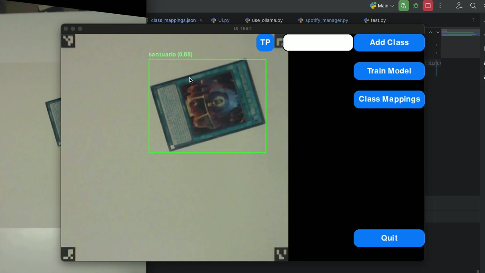
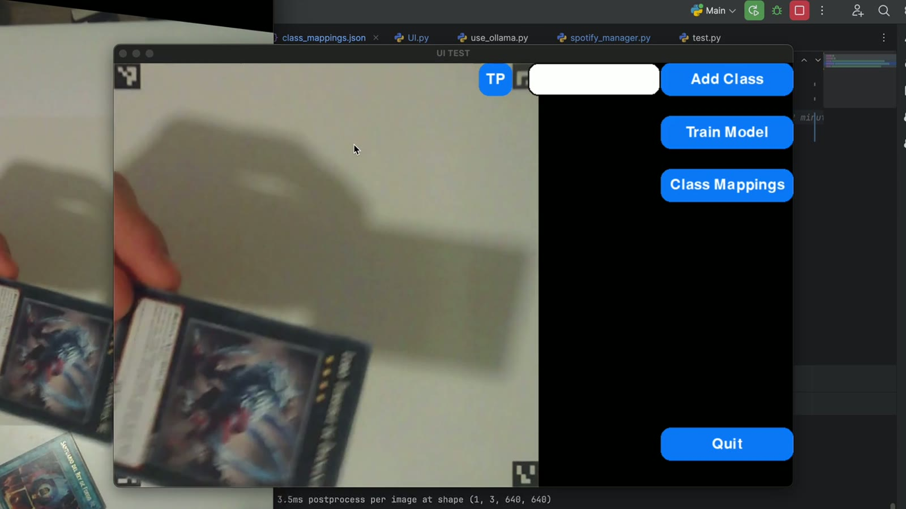
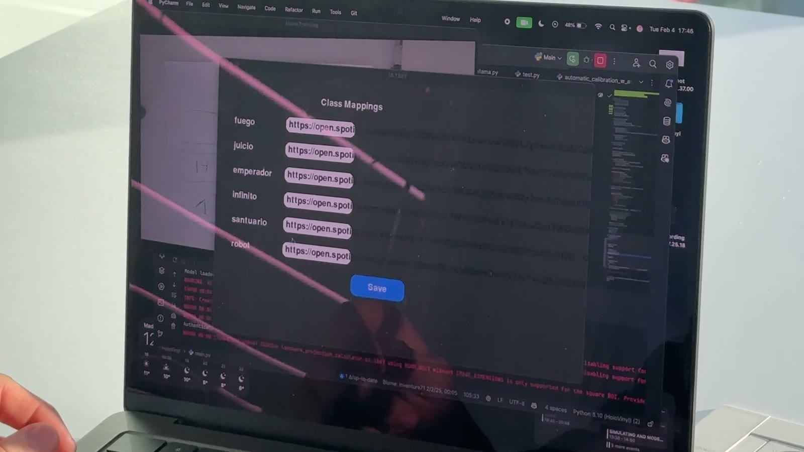

Computer vision · 2025
HoloVinyl
A camera-based music interface: objects select Spotify tracks, and hand gestures control playback.

Recognition & controls
Object recognition and hand tracking
Object-to-music mapping
A fine-tuned YOLO11 model recognizes the objects in front of the camera. Each class maps to a Spotify source; several steady detections are required before an object becomes active.
Point and pinch controls
MediaPipe tracks the hand over the camera view. Point at a playback control and pinch to click it. ArUco markers align the physical surface with the interface.
The prototype
Objects and gestures controlling music
Adding an object
Train a new object
Capture photos, train the detector, and assign music from the same interface.
- CaptureName the object and take five photos.
- TrainBackground removal produces labels for fine-tuning the detector.
- MapAssign the recognised class a Spotify track, album, or playlist.


Music suggestions
Recognising an unfamiliar object
An optional workflow uses Moondream to describe an object and DeepSeek to turn that description into a music query. These models run locally; Spotify playback requires a network connection.